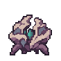
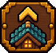
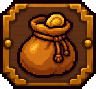

<!doctype html><html lang="ko"><meta charset="utf-8"><meta name="viewport" content="width=device-width,initial-scale=1"><title>선술집과 대기장 · Tavern Heros</title><link rel="stylesheet" href="view.css"><link rel="stylesheet" href="counter-finish.css">
<main><header><h1>선술집과 대기장</h1><button id="reset">시안 초기화</button></header>
<div class="viewport"><div class="yard" id="yard">
  <div id="intel"><div class="erosion"><span>침식도 24%</span></div><div class="round">라운드 4 / 15</div><div class="enemy">다음 적 · 빈껍질 집전관</div></div>
  <div id="deck" aria-label="내 덱"></div>
  <section id="shop" aria-label="고용 후보" hidden><div id="offers"></div></section>
  <button class="action" id="captain" aria-label="대장 능력 공개 징집"><span>공개 징집</span></button>
  <button class="action" id="level" aria-label="선술집 레벨업"><span class="level-tag"><small>레벨업</small><b id="lv"></b> <i class="coin"></i><b id="levelCost"></b></span></button>
  <button class="action" id="reroll" aria-label="1골드로 상점 리롤" hidden><span><i class="coin"></i>1</span></button>
  <button class="action" id="gold" aria-label="보유 골드와 상점" aria-controls="shop" aria-expanded="false"><span><i class="coin"></i><b id="balance"></b></span></button>
  <button id="deploy">출전</button>
  <div id="detail" hidden><h2 id="heading"></h2><p id="description"></p><div id="choices"></div><button id="dismiss">닫기</button></div>
  <output id="feedback" aria-live="polite"></output>
</div></div>
<footer><a href="../shop-yard-concepts/index.html">다른 버튼 시안 5종 보기</a> · 금화 주머니로 상점을 열고 용병을 골라보세요. <a href="reference-closed.png">대기장 PNG</a> · <a href="reference-open.png">상점 열림 PNG</a> · <a href="hud-assets.zip">UI 소재 ZIP</a> · <a href="../../../docs/shop-popup-reference.md">화면 기획</a></footer></main><script src="../../unit-sprites/graded-roster/hire-roster.js"></script><script src="view.js"></script></html>
